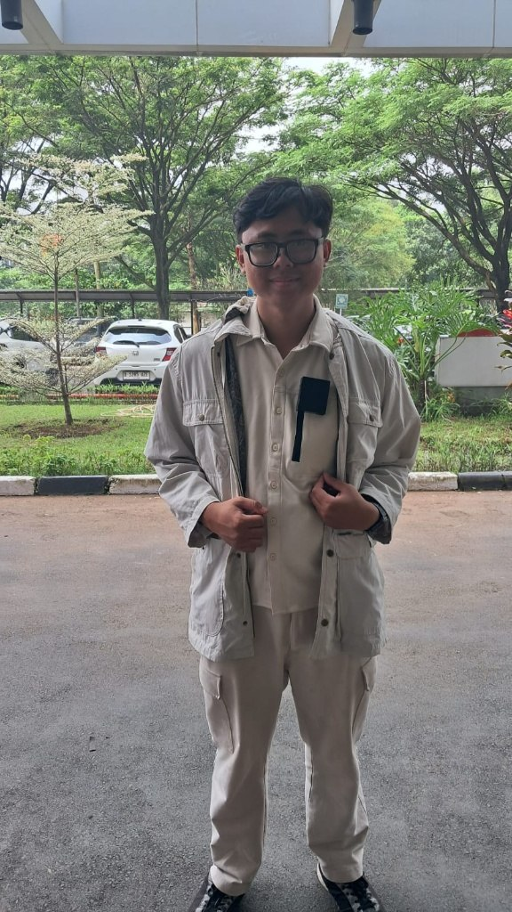
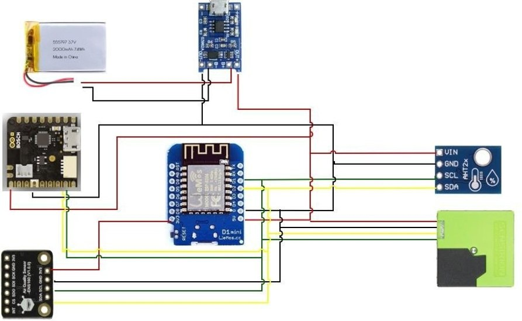
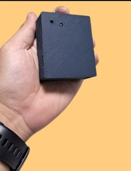
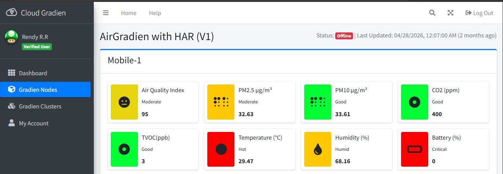
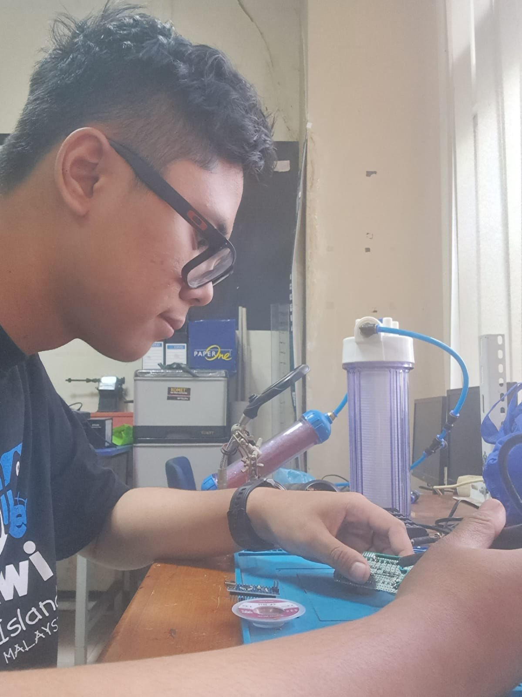
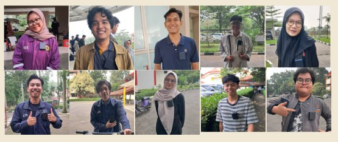

Project · Instrumentation
AirGradien — Sensor Assembly, Testing and Calibration
Part of my undergraduate final project: "Development of a Wearable Air Quality Monitoring System with Human Activity Recognition Integration for Analyzing the Effect of Motion on Particulate Measurement". This page covers the wearable device. Other parts:

Why a wearable air quality monitor
Conventional air quality monitoring systems are usually stationary, which limits their ability to capture micro-scale pollution variation, so the exposure an individual actually breathes during daily activity often goes undetected. The wearable is designed to sit on the user's chest, a position that represents breathing-zone exposure while also capturing the body's movement.
What I did
- Designed and built seven wearable sensor units using ESP32/ESP8266 with SPS30, ENS160 and AHT21 for particulate matter, TVOC, estimated eCO₂, temperature and humidity monitoring.
- Developed C/C++ firmware and Wi-Fi connectivity, checked sensor integration and compared readings with reference instruments; integrated Nicla Sense ME motion sensing on one unit.
- Processed calibration results and selected quadratic PM2.5/PM10 and linear TVOC, temperature and humidity corrections; documented interpretation limits for ENS160 eCO₂ as an estimate.

Hardware integration
The device acquires several variables at the same time. The central unit is a Wemos microcontroller (ESP32/ESP8266) connected to:
- SPS30: PM2.5 and PM10 particulates.
- ENS160 and AHT21: volatile gases (TVOC), estimated CO₂, temperature and humidity.
- Nicla Sense ME (one unit): accelerometer and gyroscope data to detect the user's body movement.
- Power: a 3.7 V 2000 mAh Li-Po battery with a charger/boost module for portable operation.
Fabrication and on-device processing
All components were assembled into a lightweight, pocket-sized casing that keeps airflow into the sensor inlet open without restricting the user's movement.
Instead of sending raw IMU data many times per second, the device calculates a Motion Index locally and transmits only that summary value together with the air quality data, which reduces battery use and communication bandwidth.


Monitoring dashboard
Data from the device is sent to a cloud interface (Cloud Gradien), which displays the Air Quality Index (AQI), PM2.5, TVOC, temperature, humidity and remaining battery percentage.
Documentation

